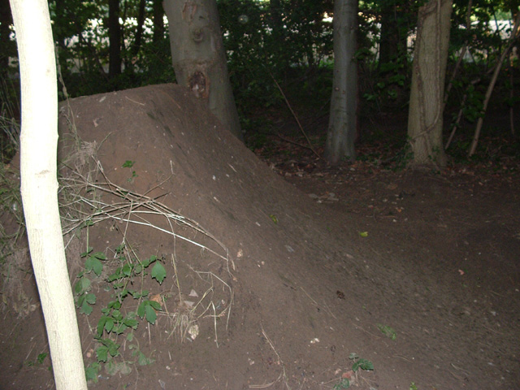
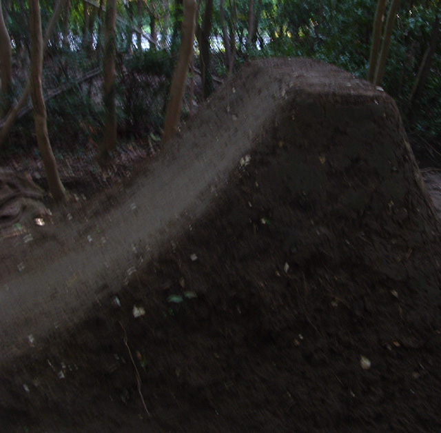
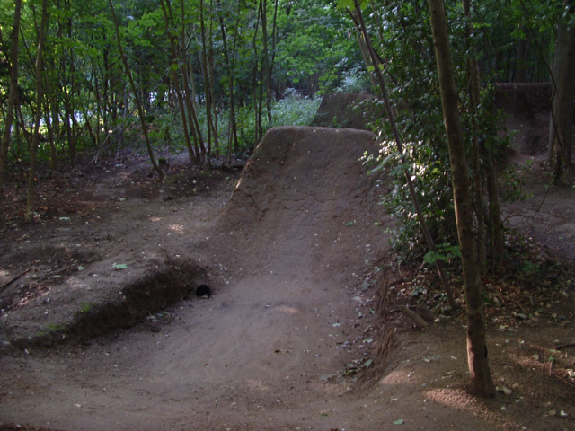

Digging
This page will give you some help on building jumps if you haven't done it much/before. It will be updated from time to time.
If you have any suggestions please let me know. Also more pictures are needed of good and bad examples, so please send send send.
Disclaimer: All of these thing are just suggestions for making jumps that I think ride nicely. Other people might disagree with this, and everyone builds jumps differently, but I think if you follow these guidelines your jumps should be more fun to ride, which is good. I have learnt these things from making these mistakes myself.
Common mistakes:
1. Curvy Lips
A jump is not a box at a skatepark, neither is it a spine, its a jump, and it usually has a fairly large gap.
It is very important that the transition of the lip is nearer the bottom than the top. You want a decent amount of flat in the top of this lip, not a steady curve. Its good to have at least a couple of feet of flat if its a larger jump but you can't really make precise rules.
You can test how big the flat spot is with a straight stick or a spade handle. The stick should lay against the top of the lip with no gap - that means there is no curve!
This doesn't mean that the jumps have to be very steep or very mellow, just remember that whether they are steep or mellow, to keep a flat spot, it just rides nicer!


2. Tight Bowls
People have a tendency to build jumps too close together. I am not sure why, but I have done it myself too. Sometimes this can be really fun, but if they are too tight then its hard to get ready for the next jump in time and you end up taking off sitting down. You can learn to ride stuff that is really tight but I personally think its not that fun.
You are better off spacing the jumps out a bit and leaving a flat spot between them. Then you can pump the curve at the bottom of the landing and at the bottom of the lip, so you get twice the pump, if you need it, like a mini ramp (yes I know I said jumps are not skateparks).
2. Symmetrical Bowls
Another mistake people make with bowls is to have the lowest point of them in the middle of the bowl and a steady curve up to the lip and landing either side. This means that you start going up the lip very early in the bowl and its not so easy to pump.
4. Deep Bowls
Deep bowls are fun to ride but they fill up with water every time it rains. If you need to dig deep bowls, then go to the effort of digging out to one side so that the water has somewhere to go, not just sit in the bottom of the bowl.

5. Be Patient
Wait for stuff to dry out before you ride it, and remember that damp jumps ride slower than rock solid baked jumps so if you can't clear something when its still a bit damp then it might be a good idea to wait until it dries a bit more before you change it.
6. Keep it simple
In the past I have made the mistake of building stuff that is really technical. It looks really fun to ride but usually that kind of thing never works - theres a reason why most jumps are simple - it works! I don't want to discourage anyone from trying new things, but in my experience they don't often work too well. I would say its a good idea to make sure you have a line of jumps you think will work before you start building more experimental things - that way if the weird stuff doesn't work you still have some thing to ride.
7, Smooth = Good
This is just a case of standards and laziness I guess. Some people have higher standard than others, but I like stuff to be really smooth. Not just the jumps, but the run up and run out as well. I feel like a line can be spoilt by having to break loads at the end of the line and get all shaken around trying to stop. I'd rather have a nice long place to roll out into - a berm back to the top is nice too!
8. Logs = Bad
When building jumps it is very temping to use logs to fill out the jumps, so you have to use less dirt. If you plan on keeping the jumps for any length of time then this is a bad idea. At some point it will be necessary to move the jump a few foot forwards and you will come across that log sticking out of your lip. Then it becomes a nightmare to get the log out without removing half the jumps. Its not worth it. The same is also true of big holes between jumps - it becomes very hard to move the jump.
9. Jumps on the flat?
If you have jumps on the flat it is tempting to make them get larger in the hope that you will be able to get through by pumping. This is a mistake. If the jumps are on the flat, then even if they stay the same size, you will have to pump to get through, so if they get bigger it will be really hard work. Remember that if a jump is taller than the one before it, the gap should be smaller.
10. One line?
Having lots of lines at trails seems like a good idea - the more jumps there are to ride, the more fun you will have. This is true, but only if the jumps are ridable. Getting a line of jumps to ride at all is not an easy task, and to make them ride well take a lot of work. Also bear in mind that the more a line is ridden the nicer it gets. All of this makes me think that one nice line is much better that lots of unridable line. Obviously lots of ridable lines is best but that probably needs quite a few people.